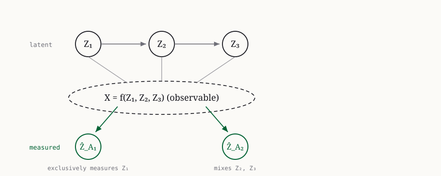
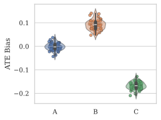

The Third Pillar of Causal Analysis?
A measurement perspective on causal representations
Causal reasoning and discovery are the two classical pillars of causal analysis, but both assume the variables of interest are observed. We reinterpret causal representation learning (CRL) through a measurement-model lens, treating learned representations as proxy measurements of latent causal variables. This clarifies when a representation supports downstream causal reasoning and yields a new Test-based Measurement EXclusivity (T-MEX) score that quantifies representation quality via conditional-independence testing. Across numerical simulations and a real-world ecological video benchmark, T-MEX tracks the bias of downstream causal estimates where standard metrics such as R² do not.
A third pillar for causal analysis
Causal analysis classically rests on two pillars: causal reasoning, which assumes the causal structure is known and uses data to answer quantitative questions like the average effect of one variable on another, and causal discovery, which recovers that structure assuming the causal variables are directly observed (Schölkopf et al. 2021). In many real-world settings, neither assumption holds — the variables of interest are entangled inside high-dimensional, noisy observations such as images or video. Causal Representation Learning (CRL) has the potential to serve as a third pillar: unmixing a set of causally related latent variables from unstructured data so that causality can be applied where the variables are not directly measured.
Despite rapid progress on identifiability theory for CRL, two practical questions remain underexplored: what makes a learned representation useful for a downstream causal task, and how should we evaluate it? This paper reinterprets CRL through the formalism of measurement models (Silva et al. 2006), where the learned representation is read as a proxy measurement of the latent causal variables. That lens both characterizes when a representation supports downstream reasoning and grounds a new, principled evaluation score.
CRL as a measurement model
A measurement model pairs latent causal variables \mathbf{Z} = \{\mathbf{Z}_1, \dots, \mathbf{Z}_N\} with observed measurement variables \widehat{\mathbf{Z}} = \{\widehat{\mathbf{Z}}_{A_1}, \dots, \widehat{\mathbf{Z}}_{A_M}\} and specifies that each measurement is a deterministic function of its causal parents, \widehat{\mathbf{Z}}_{A_j} := h_j\!\left(\mathbf{Z}_{\mathrm{pa}(\widehat{\mathbf{Z}}_{A_j})}\right). The functions h_j are the measurement functions. When a measurement has a single causal parent and h_j is the identity, that latent variable is measured directly. The framework imposes no parametric structure on the latent causal model — the relationship between latents and measurements is instead pinned down by a hypothesis: an identifiability guarantee, prior knowledge, or the assumptions of a particular causal task.1
1 The framework borrows the term from Silva et al. (2006) but differs in two ways: that work searches for pure, low-dimensional measurements under a linear latent SCM, whereas here an arbitrary CRL representation is interpreted as the measurement and no parametric assumption is placed on the latent variables.

Crucially, a measurement model specified by identifiability theory is necessary but not sufficient for a representation to be a drop-in replacement in a causal estimator. The authors call a measurement model causally valid with respect to a statistical estimand g when the measurement can replace the true causal variables without changing the estimate, i.e. g(\mathbf{Z}) = g(\widehat{\mathbf{Z}}). Whether this holds depends on the estimand: identifying a treatment or outcome only up to a nonlinear invertible reparameterization is not enough for average-treatment-effect (ATE) estimation, while it is enough to adjust for a confounder or to use an estimand that is invariant to such reparameterizations (Kügelgen et al. 2024).
Exclusivity and the T-MEX score
A measurement model tells us, for each measurement variable, which latent it should exclusively measure: \widehat{\mathbf{Z}}_{A_j} exclusively measures \mathbf{Z}_i when \mathbf{Z}_i is its only causal parent. Exclusivity has a testable signature in terms of conditional independence — a missing edge from \mathbf{Z}_i to \widehat{\mathbf{Z}}_{A_j} means
\mathcal{H}_0(i, j):\quad \widehat{\mathbf{Z}}_{A_j} \perp\!\!\!\perp \mathbf{Z}_i \mid \mathbf{Z}_{[N]\setminus\{i\}}.
The Test-based Measurement EXclusivity (T-MEX) score compares the conditional-independence pattern the measurement model expects against the pattern observed in data. Let V \in \{0,1\}^{N\times M} be the adjacency matrix of the hypothesized model and \widehat{W} \in \{0,1\}^{N\times M} the matrix of test outcomes (entry set to 1 when the corresponding \mathcal{H}_0 is rejected). The score is their Hamming distance,
\text{T-MEX}(V, \widehat{W}) := \sum_{j=1}^{M}\sum_{i=1}^{N} \mathbb{1}\!\left(V_{ji} \neq \widehat{W}_{ji}\right),
so lower is better and 0 means perfect agreement. The score is agnostic to the choice of conditional-independence test. The authors use the projected covariance measure (PCM) test (Lundborg et al. 2024), which offers validity and power guarantees. When the joint distribution aligns with the measurement model, the expected T-MEX is bounded by the tests’ false-positive and false-negative rates, \mathbb{E}[\text{T-MEX}] \le \alpha\,(MN - \lVert V\rVert_1) + (1-\beta)\,\lVert V\rVert_1.2
2 That bound assumes each test uses an independent sample. With a single shared sample across many tests the authors recommend a multiple-comparison correction (e.g. Bonferroni–Holm, Holm (1979)) to avoid inflating the score.
A central motivation is that the standard CRL metrics measure the wrong thing. The coefficient of determination R^2 and the mean correlation coefficient quantify predictability, not exclusivity: when latents are causally related, a measurement of \mathbf{Z}_1 can score a high R^2 for a downstream child \mathbf{Z}_2 purely through the latent correlation, even though it carries no extra information about \mathbf{Z}_2 (Gamella et al. 2025). T-MEX targets the conditional-independence structure that predictability metrics miss.
Experiments
Numerical simulation: confounder adjustment
The first experiment generates five causal variables from a linear structural causal model, entangles three of them through an invertible MLP into the observable X, and targets the ATE of \mathbf{Z}_4 on \mathbf{Z}_5 using \mathbf{Z}_1 as a backdoor adjustment. Three CRL models trained with the multi-view method of Yao et al. (2024) are compared: Model A (sufficiently trained, so its representation should exclusively measure \mathbf{Z}_1), Model B (insufficiently trained, with unclear correspondence), and Model C (a corrupted version of A whose representation is linearly mixed with \mathbf{Z}_2, \mathbf{Z}_3). Results are computed over 50 simulated datasets of 4096 observations each.
| Model | T-MEX (\downarrow) | R^2(\mathbf{Z}_1) | R^2(\mathbf{Z}_2) | R^2(\mathbf{Z}_3) |
|---|---|---|---|---|
| A | 0.12 \pm 0.33 | 0.9984 \pm 0.0001 | 0.7516 \pm 0.0064 | 0.8001 \pm 0.0006 |
| B | 1.18 \pm 0.39 | 0.6665 \pm 0.0078 | 0.8305 \pm 0.0032 | 0.8707 \pm 0.0027 |
| C | 2.00 \pm 0.00 | 0.9394 \pm 0.0016 | 0.5421 \pm 0.0096 | 0.6627 \pm 0.0084 |
The well-identified Model A attains a near-zero T-MEX, indicating its representation exclusively measures \mathbf{Z}_1, whereas Models B and C carry high T-MEX (Table 1). The downstream ATE bias tracks T-MEX, not R^2: R^2 stays relatively high for all three models and gives no clear signal of which representation is usable, while the ATE bias separates the models exactly as T-MEX predicts (Figure 2).

Real-world ecology: ISTAnt
The second experiment uses ISTAnt (Cadei et al. 2024), a benchmark of video recordings of ant triplets where the task is to extract a per-frame representation, classify grooming behavior, and estimate the ATE of a pathogen exposure. Because the data come from a randomized controlled trial, treatment and outcome are unconfounded. The authors compute T-MEX for 2{,}400 models at significance level \alpha = 0.05 and, restricting to models above 80\% accuracy, compare accuracy and ATE bias across the T-MEX groups.

Models with \text{T-MEX} = 0 achieve higher mean accuracy with lower variance and concentrate their ATE bias near zero (Figure 3). A Mann–Whitney U test (Mann and Whitney 1947) of the null that the T-MEX = 1 group has no larger absolute ATE bias yields p = 0.0047, rejecting it: the T-MEX = 1 models are significantly more biased. Notably, T-MEX needs only observational data and is robust to selection bias, whereas computing the ATE bias directly requires a validation set that closely matches the RCT population — a much stronger assumption.
Takeaway
Reading CRL representations as measurements of latent causal variables gives a single framework for two questions that were previously tangled together: whether a representation is identified and whether it is usable for a specific causal task. The resulting T-MEX score, built on conditional-independence testing, flags representations that standard predictability metrics wrongly endorse, and it tracks downstream estimation bias in both controlled simulations and a real ecological experiment. A copyable BibTeX entry for this paper is generated below.
Citation
@inproceedings{yao2025,
author = {Yao, Dingling and Huang, Shimeng and Cadei, Riccardo and
Zhang, Kun and Locatello, Francesco},
title = {The {Third} {Pillar} of {Causal} {Analysis?}},
booktitle = {Advances in Neural Information Processing Systems
(NeurIPS)},
date = {2025-05-23},
doi = {10.48550/arXiv.2505.17708}
}